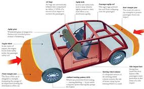

Car
Cars are not only a means of transportation but also a symbol of innovation and design. Over the years, they have evolved to incorporate cutting-edge technology, increased safety features, and sustainability efforts. Whether it's the thrill of a high-performance sports car or the comfort of a family sedan, cars offer a wide range of experiences. Let's explore the different aspects of cars and their impact on our daily lives.

1. Engine Technology
The engine is the heart of any car, driving its performance and fuel efficiency. Advances in engine technology have led to the development of hybrid and electric engines, which reduce emissions and improve overall efficiency. The shift to electric vehicles (EVs) is making a significant impact on the automotive industry.
2. Safety Features
Modern cars come equipped with an array of safety features such as airbags, anti-lock braking systems (ABS), and traction control. Technologies like autonomous emergency braking and lane-keeping assist have further enhanced vehicle safety. These advancements help reduce accidents and protect passengers in case of a crash.
3. Fuel Efficiency
Fuel efficiency is one of the most important factors for many car buyers today. With rising fuel prices and environmental concerns, automakers have focused on developing vehicles that offer better mileage. Hybrid and electric cars are becoming increasingly popular due to their superior fuel efficiency and lower environmental impact.
4. Car Design
The design of a car is not only about aesthetics but also about aerodynamics, comfort, and functionality. Sleek, modern designs reduce drag, improve fuel economy, and provide a more enjoyable driving experience. From the curves of the body to the layout of the interior, car design plays a key role in how we perceive and interact with vehicles.
5. Electric Vehicles (EVs)

Electric vehicles (EVs) are changing the landscape of the automotive industry. Powered by rechargeable batteries, EVs produce zero emissions and offer significant cost savings over time due to lower maintenance and fuel costs. With advancements in battery technology and growing charging infrastructure, EVs are becoming a more accessible option for car buyers worldwide.
6. Autonomous Driving
Autonomous driving technology is transforming the way we think about cars. Self-driving cars use sensors, cameras, and artificial intelligence to navigate roads without human intervention. This innovation promises to reduce traffic accidents and improve mobility for people with disabilities or those unable to drive.
7. Car Interior

The interior of a car is where comfort and technology meet. With advancements in infotainment systems, climate control, and seating materials, modern cars offer a premium experience. Features like touch screens, wireless charging, and sound systems have redefined the in-car experience for both drivers and passengers.
8. Car Maintenance
Regular maintenance is essential for keeping your car in top condition. Routine tasks such as oil changes, tire rotations, and brake checks can prevent costly repairs and extend the life of your vehicle. With new technologies, some cars now offer diagnostic systems that alert drivers to maintenance needs.
9. Car Brands
The automotive market is filled with a wide range of car brands, each offering different features, performance, and price points. From luxury brands like Mercedes-Benz and BMW to more affordable options like Toyota and Ford, choosing the right car brand depends on personal preferences and budget. Each brand has its own legacy and commitment to quality.